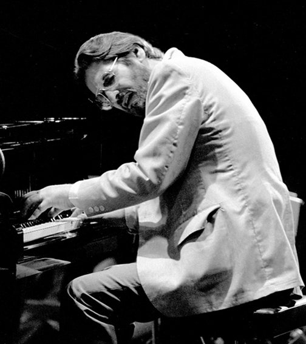

빌 에번스(영어: Bill Evans, 본명:William John Evans)는 미국의 재즈 피아니스트이다. 그가 사용한 인상파적인 화성, 전통 재즈 래퍼토리의 창의적인 해석, 리듬과의 독립, 노래하는 듯한 선율은 많은 피아니스트들에게 영향을 주었다. 그는 세계 2차 대전 이후 가장 영향력있는 재즈 피아니스트로 평가된다. 빌 에반스는 목을 매우 낮게 하여 피아노와 얼굴이 평행이 된 상태로 연주를 하는 독특한 스타일을 가지고 있었다. 빌 에반스는 다운 비트 재즈 명예의 전당에 올랐다.
